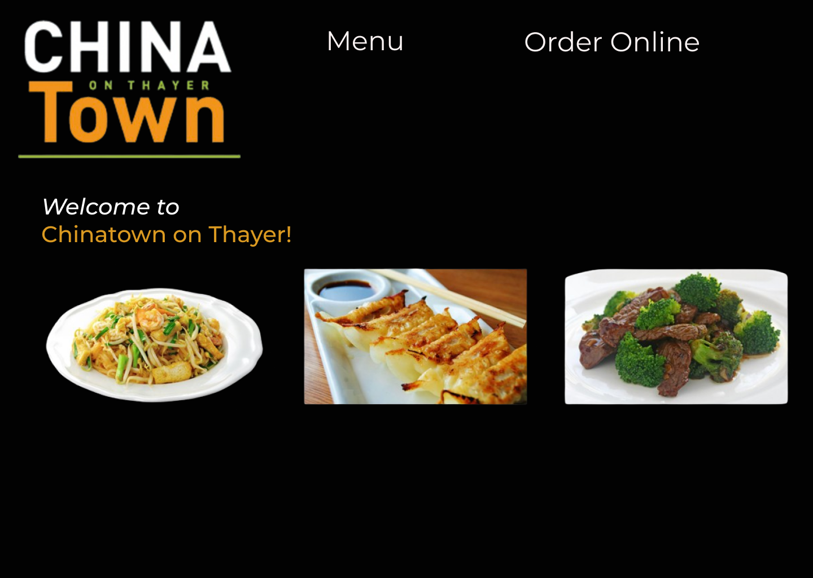
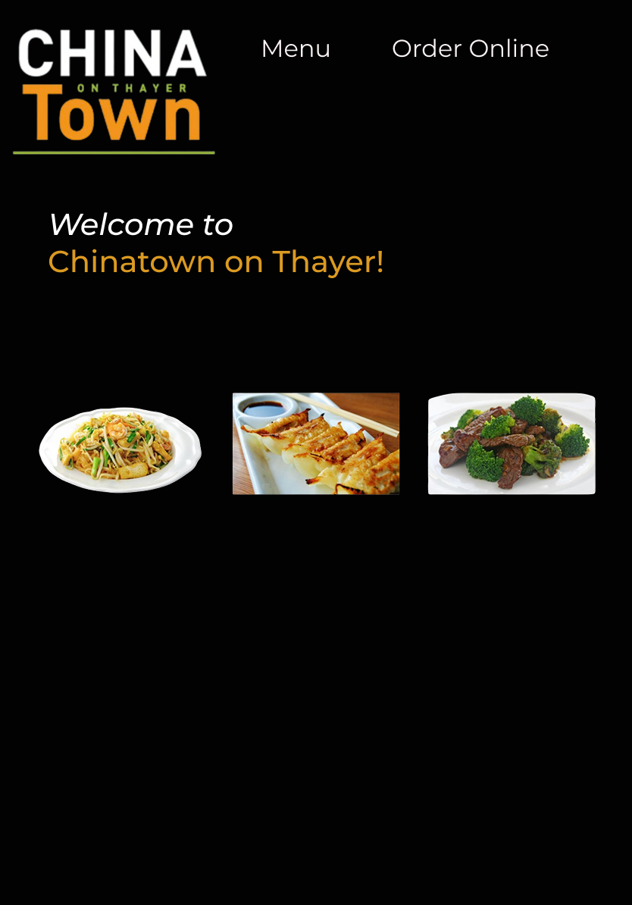
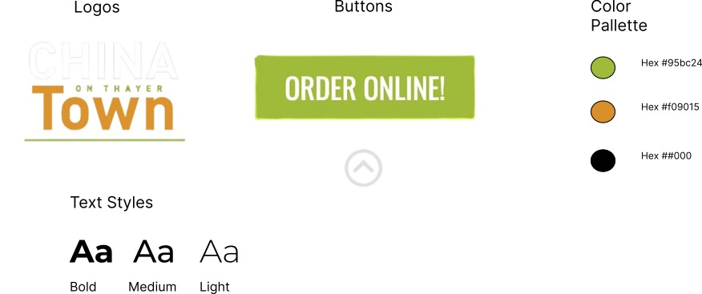

Background
Chinatown is one of my favorite restaurants on campus and great place to go for a late night meal. While their food is amazing, there website has many flaws that could be improved upon. This project aims to investigate and address ways to improve the website in making it more user-friendly and efficient.
Identifying Usability Problems
Efficiency (Rating: 5/10)
- Redundant elements: The “We Now Serve Sushi” banner and repeated “Order Online!” links add extra click points without adding value.
- Cluttered header: Logo, app badges, social icons, and banners compete for attention, pushing important content down.
- Hidden menu options: On smaller viewports, submenu items may be cut off or require extra scrolling.
Learnability (Rating: 7/10)
- Unclear ordering flow: Users must click to discover whether “Order Online” links to a third-party platform or internal cart.
- No visual affordance: Menu items lack hover effects or buttons to show they are interactive.
Memorability (Rating: 6/10)
- Inconsistent navigation: Primary links mix text and image buttons, making it hard to remember where to click on return visits.
- No persistent cues: After navigating away, CTAs like ordering and hours aren’t pinned, so users must scroll back up each time.
Accessibility Issues
- Low contrast: Light gray text on white fails WCAG AA standards for body copy.
- Missing alt text: Decorative images (logo, banners, app badges) lack meaningful alt attributes.
- Poor keyboard navigation: Absence of semantic landmarks and tabindex ordering hinders keyboard-only users.
- Viewport meta missing: Without
<meta name="viewport">, mobile users get a shrunk, non-responsive view.
Visual Redesign Mockups

Mockup 1: Large Computer (~3840×2160px)

Mockup 2: Tablet (~768×1024px)
Mockup 3: Phone (~375×667px)
Style Guide
This style guide outlines our key visual elements—logos, buttons, color palette, and typography—to ensure consistent branding across all pages.

Improvements Overview
Readability Improvements
- By increasing line-height to 1.75 and constraining paragraph width to 60ch, the text is now easier to scan and reduces eye strain, particularly on wide screens.
- Contrast has been enhanced with white body text on a black, ensuring WCAG-compliant (AAA) levels of readability.
Usability Enhancements
- The mobile-first navigation toggle improves task efficiency on small devices, allowing users to open and close the menu with one tap.
- Hover and focus states have been added to interactive elements (buttons and menu items), providing clear affordances and feedback.
Memorability Gains
- Active navigation links are underlined and colored green, offering a persistent cue to help repeat visitors locate sections quickly.
- Consistent placement of key CTAs (e.g. “Order Online”) in the header and hero reinforces muscle memory across sessions.
Accessibility Enhancements
- Inserted a skip-to-main link for keyboard users.
- Wrapped regions in landmarks/ARIA roles (
role="main",aria-labelledby). - Added a “Back to top” link in the footer with focus styles.
Conclusion
- The redesign addresses key usability issues, improving efficiency, learnability, memorability, and accessibility.
- Visual consistency and clear navigation help users complete tasks faster and with less confusion.
- Accessibility enhancements ensure the site is usable for a wider audience, including keyboard and screen reader users.
- Mockups and a style guide provide a strong foundation for future development and brand consistency.
- For the live website, visit: Chinatown on Thayer Website